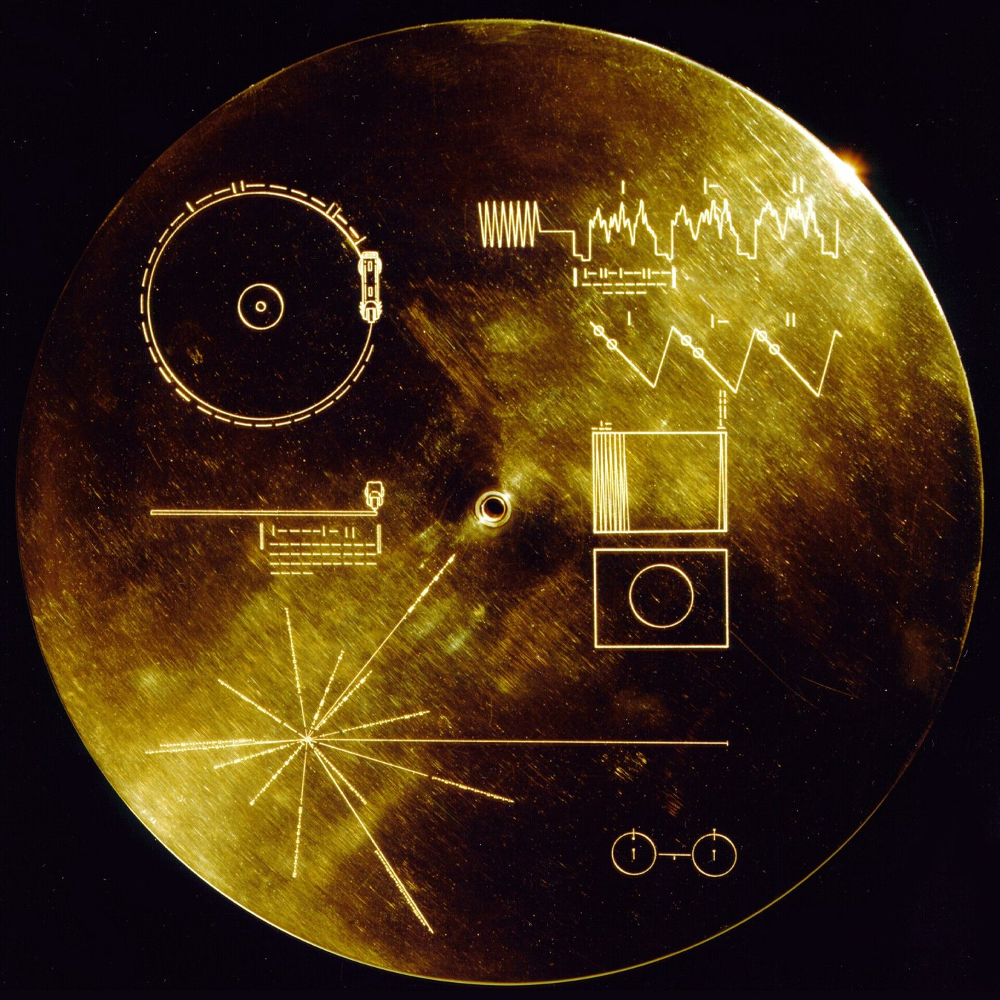

वॉयजर-1: एक 'प्रकाश-दिन' दूर, 49 साल पुरानी मशीन जो आज भी घर पर चिट्ठी भेजती है
सोचिए, आप किसी को "हैलो" कहें और "हाँ, सुन रहा हूँ" सुनने के लिए पूरे दो दिन रुकना पड़े। नासा के वैज्ञानिकों के साथ इस हफ़्ते से ठीक यही हो रहा है। उनका अंतरिक्ष-यान वॉयजर-1, जिसे 1977 में छोड़ा गया था, अब पृथ्वी से इतनी दूर पहुँच गया है कि वहाँ तक रोशनी को भी पूरा एक दिन लगता है। इंसान की बनाई कोई भी चीज़ आज तक इतनी दूर नहीं गई।
क्या हुआ?
18 नवंबर 2026 को, भारतीय समय के हिसाब से लगभग दोपहर पौने चार बजे, वॉयजर-1 पृथ्वी से एक 'प्रकाश-दिन' की दूरी पर पहुँच गया। यह दूरी है लगभग 2,590 करोड़ किलोमीटर। अब नासा का भेजा कोई भी आदेश वहाँ 24 घंटे में पहुँचता है, और यान का जवाब पृथ्वी तक आने में फिर 24 घंटे लगते हैं।
नासा के वैज्ञानिकों ने साफ़ कहा है कि इस रेखा को पार करने से यान में कुछ नहीं बदला; यह कोई दीवार या दरवाज़ा नहीं था। पर यह एक ऐतिहासिक, प्रतीकात्मक पड़ाव है, जैसे किसी धावक का 100वाँ किलोमीटर।
'प्रकाश-दिन' आख़िर है क्या?
प्रकाश ब्रह्मांड की सबसे तेज़ चीज़ है: एक सेकंड में लगभग 3 लाख किलोमीटर, यानी एक सेकंड में पृथ्वी के साढ़े सात चक्कर। प्रकाश एक पूरे दिन में जितनी दूरी तय करता है, उसे एक प्रकाश-दिन कहते हैं। तुलना कीजिए:
- चाँद से रोशनी हम तक लगभग सवा सेकंड में आती है।
- सूरज से लगभग सवा 8 मिनट में।
- और वॉयजर-1 से अब पूरे 24 घंटे में।
एक मज़ेदार हिसाब: अगर कोई कार 100 किलोमीटर प्रति घंटे की रफ़्तार से बिना रुके चले, तो इस दूरी तक पहुँचने में उसे लगभग 29,000 साल लगेंगे। वॉयजर-1 लगभग 61,000 किलोमीटर प्रति घंटे की रफ़्तार से चल रहा है, और फिर भी उसे यहाँ तक आने में 49 साल लगे।
कितना दूर है वॉयजर-1? दूरियों की तुलना
हर पट्टी की लंबाई असली दूरी के अनुपात में है। दाईं ओर लिखा है कि वहाँ से रोशनी को हम तक आने में कितना समय लगता है। चाँद, आदित्य-L1 और सूरज की पट्टियाँ इतनी छोटी हैं कि लगभग दिखती ही नहीं: यही इस दूरी का असली अचंभा है।
1.3 सेकंड
5 सेकंड
8 मिनट 20 सेकंड
12.7 मिनट
43 मिनट
1 घंटा 20 मिनट
4 घंटे 10 मिनट
5 घंटे 30 मिनट
16 घंटे 40 मिनट
24 घंटे
दूरियाँ लगभग हैं। ग्रहों के लिए सूरज से औसत दूरी ली गई है; पृथ्वी से उनकी दूरी साल भर घटती-बढ़ती रहती है। km = किलोमीटर।
सौरमंडल और वॉयजर-1: पैमाने पर बना नक़्शा
सूरज से हर ग्रह और वॉयजर-1 की दूरी असली अनुपात में है। नीचे की रेखा बताती है कि सूरज से निकली रोशनी को वहाँ तक पहुँचने में कितने घंटे लगते हैं। नेपच्यून तक रोशनी लगभग 4 घंटे में पहुँचती है, वॉयजर-1 तक पूरे 24 घंटे में।
प्रकाश-वर्ष से तुलना: एक प्रकाश-वर्ष = 365 प्रकाश-दिन। हमारे सबसे पास का तारा, प्रॉक्सिमा सेंटॉरी, 4.2 प्रकाश-वर्ष (लगभग 1,550 प्रकाश-दिन) दूर है। यानी 49 साल की यात्रा के बाद भी वॉयजर-1 उस तारे तक की दूरी का सिर्फ़ लगभग 1,550वाँ हिस्सा ही तय कर पाया है। (ग्रहों की दूरी सूरज से औसत दूरी है; ग्रहों का आकार पैमाने पर नहीं है।)

शुरुआत: 175 साल में एक बार मिलने वाला मौक़ा
1970 के दशक में वैज्ञानिकों ने देखा कि बृहस्पति, शनि, यूरेनस और नेपच्यून एक ऐसी स्थिति में आ रहे हैं जो लगभग 175 साल में एक बार बनती है। इस स्थिति में एक यान एक ग्रह के गुरुत्व से 'धक्का' लेकर अगले ग्रह तक जा सकता था, कम ईंधन में ज़्यादा दूरी। इस मौक़े का फ़ायदा उठाने के लिए नासा ने दो जुड़वाँ यान बनाए: वॉयजर-1 और वॉयजर-2।
एक दिलचस्प बात: वॉयजर-2 पहले छोड़ा गया था (20 अगस्त 1977), और वॉयजर-1 उसके 16 दिन बाद, 5 सितंबर 1977 को। पर वॉयजर-1 को तेज़ रास्ते पर भेजा गया था, इसलिए वह आगे निकल गया और नंबर '1' उसी को मिला।
फिर शुरू हुई खोजों की झड़ी। 1979 में बृहस्पति के पास से गुज़रते हुए वॉयजर-1 ने उसके चाँद 'आयो' पर सक्रिय ज्वालामुखी देखे: पृथ्वी के बाहर पहली बार कहीं ज्वालामुखी फटते दिखे। 1980 में शनि के पास इसने उसके छल्लों की बारीक बनावट और उसके चाँद 'टाइटन' के घने वायुमंडल की जानकारी भेजी। इसके बाद यह ग्रहों के रास्ते से बाहर, सौरमंडल के किनारे की ओर निकल पड़ा।
पीछे मुड़कर एक आख़िरी तस्वीर: 'हल्की नीली बिंदी'
14 फ़रवरी 1990 को, जब वॉयजर-1 पृथ्वी से लगभग 600 करोड़ किलोमीटर दूर था, प्रसिद्ध खगोलविद कार्ल सेगन के सुझाव पर इसका कैमरा आख़िरी बार पीछे घुमाया गया। उस तस्वीर में हमारी पूरी पृथ्वी एक धूल के कण जितनी छोटी, हल्की नीली बिंदी दिखती है। सेगन ने लिखा कि हर इंसान जो कभी जिया, हर राजा, हर किसान, हर प्रेम-कहानी, सब उसी बिंदी पर हुआ। इसके बाद कैमरे हमेशा के लिए बंद कर दिए गए, ताकि बिजली बचे।

साथ में सोने का एक रिकॉर्ड, और उसमें हमारी आवाज़
दोनों वॉयजर यानों पर सोने की परत वाला एक 'गोल्डन रिकॉर्ड' लगा है: किसी अनजान सभ्यता के लिए पृथ्वी का संदेश। इसमें पृथ्वी की आवाज़ें (बारिश, हवा, पक्षी, दिल की धड़कन, बच्चे की हँसी), 115 तस्वीरें, संगीत और 55 भाषाओं में अभिवादन हैं, जिनमें हिंदी भी शामिल है। संगीत में भारत की ओर से सुरश्री केसरबाई केरकर का गाया राग भैरवी, "जात कहाँ हो", भी है। यानी अगर कभी कोई दूसरी दुनिया इसे सुने, तो हिंदुस्तानी शास्त्रीय संगीत भी सुनेगी।

तारों के बीच पहुँचने वाली पहली चीज़
सूरज से लगातार कणों की एक 'हवा' निकलती है, जो सौरमंडल के चारों ओर एक विशाल बुलबुला बनाती है। इसे हीलियोस्फ़ीयर कहते हैं। 25 अगस्त 2012 को, लगभग 1,800 करोड़ किलोमीटर की दूरी पर, वॉयजर-1 इस बुलबुले से बाहर निकलकर तारों के बीच के खुले अंतरिक्ष (इंटरस्टेलर स्पेस) में पहुँचा। ऐसा करने वाली यह इंसान की पहली चीज़ बनी; वॉयजर-2 ने यह 2018 में किया।
वहाँ से इसने बताया कि बाहर कणों की गति और तापमान कम है, चुंबकीय क्षेत्र कमज़ोर है और धूल भीतर की आधी है। आज भी तारों के बीच के अंतरिक्ष से सीधे आँकड़े भेजने वाले पूरी मानवता के पास सिर्फ़ यही दो यान हैं।
49 साल पुरानी मशीन आज भी कैसे चल रही है?
यही इस कहानी का सबसे अनोखा हिस्सा है।
- बिजली: वहाँ सूरज की रोशनी इतनी कम है कि सोलर पैनल काम नहीं कर सकते। यान प्लूटोनियम के धीरे-धीरे टूटने से निकली गर्मी से बिजली बनाता है। यह बिजली हर साल लगभग 4 वॉट घटती जाती है, इसलिए नासा एक-एक करके उपकरण बंद कर रहा है। फ़रवरी 2025 में वॉयजर-1 का कॉस्मिक-किरण नापने वाला उपकरण बंद किया गया।
- कंप्यूटर: इसके कंप्यूटर की मेमोरी लगभग 70 किलोबाइट है: आज के एक साधारण मोबाइल से लाखों गुना कम। आपके फ़ोन की एक फ़ोटो भी इससे बड़ी होती है।
- 2,400 करोड़ किलोमीटर दूर से 'मरम्मत': नवंबर 2023 में वॉयजर-1 अचानक बेमतलब आँकड़े भेजने लगा। महीनों की जासूसी के बाद इंजीनियरों ने पाया कि मेमोरी की एक चिप ख़राब हो गई है। चिप बदली नहीं जा सकती थी, इसलिए उन्होंने उसका सॉफ़्टवेयर टुकड़ों में बाँटकर मेमोरी के दूसरे ख़ाली कोनों में डाल दिया, और अप्रैल 2024 में यान फिर ठीक से बोलने लगा। हर आदेश भेजकर जवाब के लिए लगभग दो दिन इंतज़ार करना पड़ता था।
- सुनने वाले कान: इसके कमज़ोर संकेत अमेरिका, स्पेन और ऑस्ट्रेलिया के विशाल एंटीनों (नासा का डीप स्पेस नेटवर्क) से पकड़े जाते हैं। भारत का भी अपना ऐसा केंद्र बेंगलुरु के पास ब्यालालु में है, जिससे इसरो अपने चंद्रयान और मंगलयान जैसे मिशनों से बात करता है।
एक नज़र में: पूरी यात्रा
वॉयजर-1: एक नज़र में 49 साल की यात्रा
| कब | क्या हुआ |
|---|---|
| 20 अगस्त 1977 | वॉयजर-2 छोड़ा गया |
| 5 सितंबर 1977 | वॉयजर-1 छोड़ा गया (तेज़ रास्ते पर, इसलिए नंबर 1) |
| 5 मार्च 1979 | बृहस्पति के सबसे पास; चाँद 'आयो' पर सक्रिय ज्वालामुखी दिखे |
| 12 नवंबर 1980 | शनि के सबसे पास; टाइटन के घने वायुमंडल की जानकारी |
| 14 फ़रवरी 1990 | पीछे मुड़कर पृथ्वी की 'पेल ब्लू डॉट' तस्वीर; फिर कैमरे बंद |
| 17 फ़रवरी 1998 | पायनियर-10 को पीछे छोड़कर इंसान की बनाई सबसे दूर की चीज़ बना |
| दिसंबर 2004 | सौर-हवा के धीमे पड़ने वाले क्षेत्र (टर्मिनेशन शॉक) को पार किया |
| 25 अगस्त 2012 | सौर-बुलबुले से बाहर, तारों के बीच के अंतरिक्ष में पहुँचा |
| नवंबर 2017 | 37 साल से बंद पड़े छोटे इंजन (थ्रस्टर) दोबारा चालू किए गए |
| नवंबर 2023 – अप्रैल 2024 | ख़राब मेमोरी-चिप से बेमतलब आँकड़े; दूर से सॉफ़्टवेयर हटाकर 'मरम्मत' |
| 25 फ़रवरी 2025 | बिजली बचाने के लिए कॉस्मिक-किरण उपकरण बंद |
| 18 नवंबर 2026 | पृथ्वी से एक 'प्रकाश-दिन' दूर: इतिहास में पहली बार |
| लगभग 2036 | बिजली ख़त्म होने से संपर्क टूटने का अनुमान |
इसका असर: हमें क्या मिला?
- विज्ञान: बृहस्पति और शनि के बारे में हमारी आधुनिक समझ की नींव वॉयजर ने रखी, और तारों के बीच के अंतरिक्ष के बारे में आज जो कुछ हम सीधे जानते हैं, वह इन्हीं दो यानों से आया है।
- इंजीनियरिंग: जो मशीन 5 साल के लिए बनी थी, वह 49 साल से चल रही है। मज़बूत डिज़ाइन, बैकअप सिस्टम और समझदारी से बिजली बचाने की यह मिसाल हर भविष्य के मिशन के लिए सबक है।
- सोच: 'पेल ब्लू डॉट' ने करोड़ों लोगों को यह एहसास दिलाया कि हमारी पृथ्वी कितनी छोटी और अनमोल है। पर्यावरण बचाने की बहसों में यह तस्वीर आज भी याद की जाती है।
- भारत के लिए: इसरो अब मंगलयान और आदित्य-L1 के बाद और दूर के मिशनों की ओर बढ़ रहा है। दशकों तक चलने वाले यान बनाना, बेहद दूर से उनकी 'मरम्मत' करना और कमज़ोर संकेत पकड़ना, ये सब वही कौशल हैं जो भारत को आगे चाहिए होंगे।
विवाद और दूसरे मत
- क्या सचमुच बाहर निकला? 2012 में वैज्ञानिकों में महीनों बहस चली। कॉस्मिक किरणों के आँकड़े कह रहे थे कि यान बुलबुले से बाहर आ गया, पर चुंबकीय क्षेत्र के आँकड़े कुछ और कह रहे थे। बाद में दूसरे आँकड़ों से पुष्टि हुई। आज भी इस बुलबुले के आकार पर बहस है: कोई इसे धूमकेतु जैसा मानता है, कोई गोल, तो कोई अर्धचंद्र जैसा।
- किसे बंद करें? हर साल बिजली घटने के साथ नासा को तय करना पड़ता है कि कौन-सा वैज्ञानिक उपकरण बंद हो। हर उपकरण के पीछे वैज्ञानिकों की एक टीम है, इसलिए हर फ़ैसला कठिन होता है।
- अनसुलझा रहस्य: 2020 से वहाँ चुंबकीय क्षेत्र और कणों के घनत्व में कुछ अचानक उछाल दर्ज हुए हैं, जिनकी वजह अभी कोई नहीं जानता।
- अपना पता बताना ठीक है? गोल्डन रिकॉर्ड पर पृथ्वी का 'पता' बताने वाला नक़्शा है। कुछ लोगों ने सवाल उठाया कि किसी अनजान सभ्यता को अपना पता देना कितनी समझदारी है। जवाब में वैज्ञानिक कहते हैं कि यान इतना धीमा और छोटा है कि किसी दूसरे तारे के पास पहुँचने में ही उसे हज़ारों साल लगेंगे। कुछ आलोचकों ने यह भी कहा कि रिकॉर्ड में दुनिया की संस्कृतियों का बराबर प्रतिनिधित्व नहीं है।
अगले रविवार सुबह 10 बजे, फिर मिलेंगे एक नई अनोखी खबर के साथ।
लेख अच्छा लगा? पसंद करें और दोस्तों से शेयर करें:
स्रोत
- NASA: How Far Away Is Voyager 1? One Light-Day, Explained
- Science News: Voyager 1 is nearly one light-day from Earth (14 अक्टूबर 2026)
- EarthSky: Voyager 1, 1 light-day from Earth (नवंबर 2026)
- Al Jazeera (14 नवंबर 2026)
- NASA JPL: NASA turns off two Voyager science instruments to extend mission (मार्च 2025)
- Scientific American: After months of gibberish, Voyager 1 is communicating well again (2024)
- तस्वीरें: NASA/JPL-Caltech, सार्वजनिक डोमेन, Wikimedia Commons के ज़रिए।
- यह लेख AI की मदद से तैयार और संपादक द्वारा जाँचा गया है। कोई गलती दिखे तो हमें बताएँ, हम खुलकर सुधारेंगे।